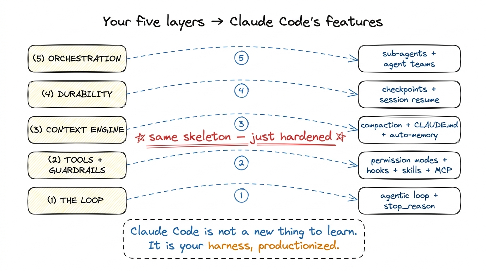
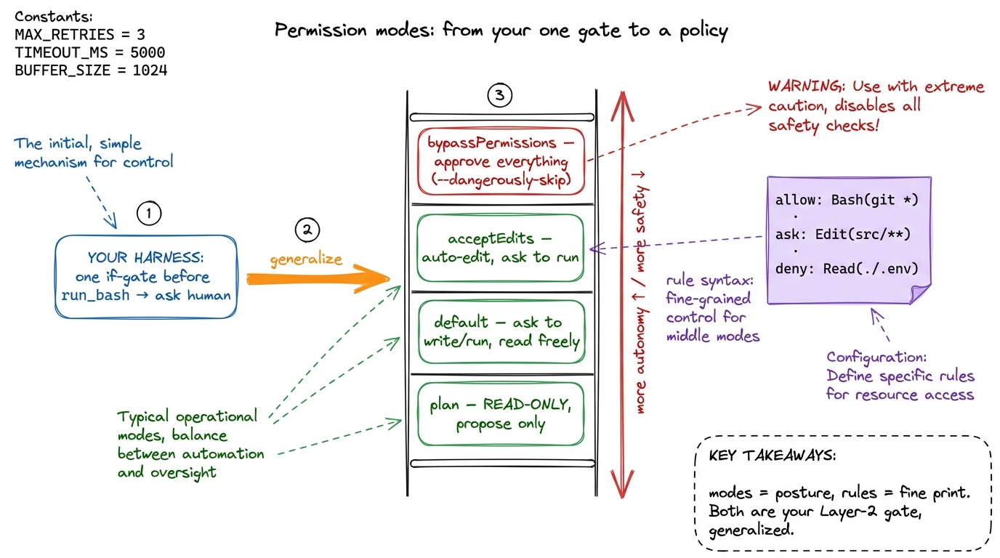
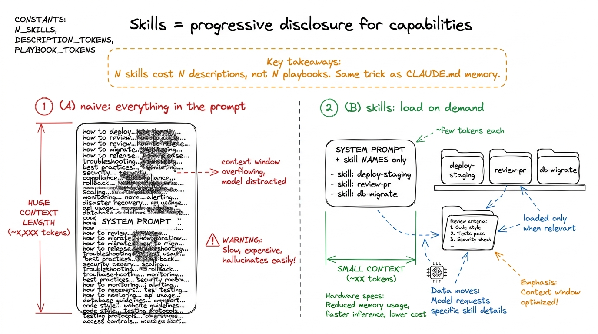
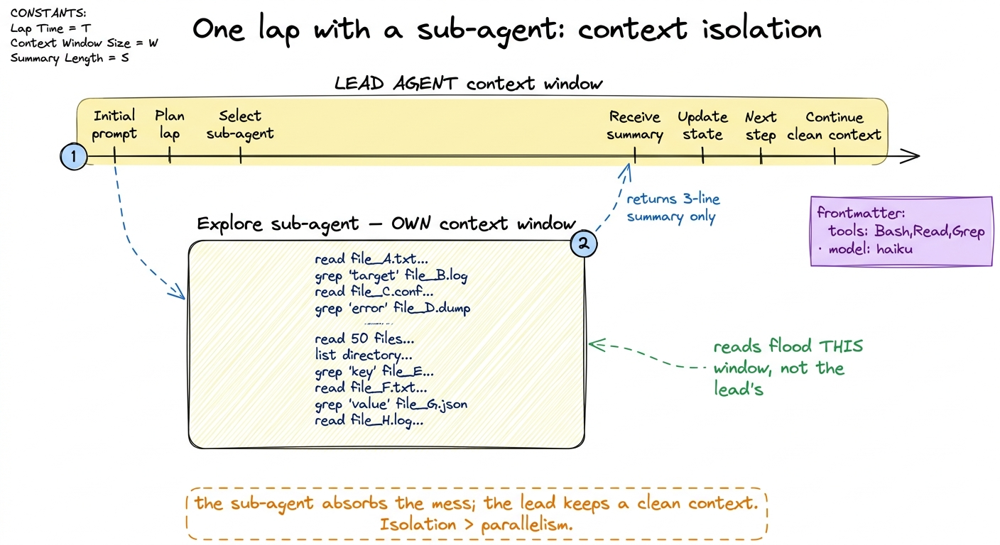

Claude Code internals: skills, hooks, MCP, sub-agents CC
By now you have built the whole machine. Across five layers you wrote a loop, gave it tools behind permission gates, taught it to compact its own context, made it checkpoint and self-heal, and let it dispatch sub-agents under a supervisor. It is a real harness. It is also, deliberately, a lab harness — the smallest version of each idea that made the idea visible. This chapter does something different: it takes the most widely-used production harness in the world, Claude Code, and shows you that every headline feature it ships is one of your layers, hardened and named for a team of thousands rather than an afternoon of learning.
That is the payoff of building from scratch. When you read Claude Code's docs now, you should not see a pile of unfamiliar nouns. You should see your own five layers wearing production clothes. Let me walk each one back to the layer it came from, and point at where Claude Code went further than we did and why.

figure rendering · Every Claude Code feature maps back to one of the five layers you builThe loop is still the loop
Start at the bottom, because it grounds everything. Claude Code's core is the exact while loop from your first bare harness: send the running messages array plus the tool schemas to the model, look at stop_reason, and if the model asked for a tool, run it, append the tool_result, and go around again. The agent stops when it stops asking for tools. That inversion of control — the model deciding when it is done, not the script — is Layer 1, and it is identical.
What Claude Code adds around that loop is not a different loop; it is a set of decision points inserted at the seams. The naked loop has exactly two seams: just before we run a tool, and just after. Almost everything in this chapter hangs off those two moments. Permission modes decide whether a tool runs. Hooks decide what else happens when it runs. Skills and MCP change which tools exist to be run at all. Compaction happens between laps, when the messages array gets too big to send. Keep that skeleton in mind and the feature list organizes itself.
Permission modes: your approval gate, promoted to a policy
In Layer 2 you wrapped run_bash in a single yes/no gate: before a dangerous tool runs, ask the human. Claude Code takes that one gate and generalizes it into a permission system with two parts — modes and rules.
The modes are named postures for how eager the agent is to act without asking. The important ones:
default— ask before anything that writes or runs, allow reads freely. This is your gate exactly.acceptEdits— auto-approve file edits, still ask for shell commands. The agent can refactor freely but can't run something surprising.plan— a read-only mode where the agent may explore and propose but is forbidden from touching anything. There is no equivalent in your lab harness, and it is worth stealing: it lets a human review the plan before any blast radius exists at all.bypassPermissions(the--dangerously-skip-permissionsflag) — approve everything, no questions. This is your gate with the check commented out, and the scary name is the point.
Underneath the modes sit rules — the fine-grained allow / ask / deny lists that live in settings.json, written in the permission-rule syntax Tool(pattern): Bash(git *) to allow all git commands, Edit(src/**) to allow edits under src, Read(./.env) on the deny list so secrets are never even readable.1 The deny list is the one you should reach for first in any real deployment. A single deny rule on .env, .git/, and your secrets directory is worth more than a hundred careful allow rules — it fails closed. We cover this posture in sandboxing and blast radius.

figure rendering · Claude Code's permission modes are your single approval gate promotedHooks: deterministic automation at the seams
Here is a feature with no counterpart in the lab harness, and it is the most instructive one to add to your mental model. A hook is a shell command (or HTTP call, or MCP tool) that Claude Code runs deterministically at a named point in the loop — not because the model decided to, but because you configured it to. The model is a probabilistic thing; hooks are the deterministic rails you bolt on so that certain things happen every single time, no matter what the model felt like doing.
They fire at lifecycle events, and the names read like a labeled diagram of the loop itself: SessionStart, UserPromptSubmit, PreToolUse, PostToolUse, Stop, SubagentStop, PreCompact, SessionEnd. Those are exactly the seams we identified. A hook is configured in settings.json with a matcher (which tools it applies to) and a handler:
{
"hooks": {
"PostToolUse": [
{
"matcher": "Edit|Write",
"hooks": [
{ "type": "command", "command": "prettier --write $CLAUDE_FILE_PATHS" }
]
}
],
"PreToolUse": [
{
"matcher": "Bash",
"hooks": [
{ "type": "command", "command": "${CLAUDE_PROJECT_DIR}/.claude/block-rm.sh" }
]
}
]
}
}The first hook auto-formats any file the moment the model edits it — you never have to ask it to run the formatter, and it can never forget. The second runs a script before every Bash call that can inspect the command and block it by exiting with code 2, feeding the reason back to the model as an error. That block is the same protective instinct as your permission gate, but where the gate asks a human, a hook decides in code — the same decision, made deterministically and at machine speed.2 This is the deep reason hooks exist: an LLM will do the right thing most of the time, and "most" is not good enough for "never commit a secret" or "always run the linter". Hooks convert a soft instruction in CLAUDE.md into a hard guarantee. When a behavior absolutely must happen, it belongs in a hook, not a prompt.
Hooks can do more than block: PreToolUse can rewrite a tool's input before it runs, PostToolUse can rewrite the output or inject additionalContext the model should see next turn. That last one is quietly a context-engineering tool — a hook reaching up into Layer 3 to shape what the model reads on the next lap.
Skills: packaged capabilities the agent loads on demand
In the lab harness, everything the agent knew how to do was either a hard-coded tool or a paragraph you stuffed into the system prompt. That does not scale: you cannot cram every workflow your team has into one ever-growing prompt without drowning the context window. Skills are Claude Code's answer, and they are a direct application of the progressive-disclosure idea from the context chapter.
A skill is a folder containing a SKILL.md file — a name, a description of when to use it, and a body of instructions, plus optional scripts and reference files. The trick is what gets loaded and when. At startup, Claude Code reads only each skill's name and description into context — a few tokens each. The full body is loaded only when the model decides the skill is relevant to the task at hand. So a hundred skills cost you a hundred one-line descriptions in context, not a hundred full playbooks.
---
name: deploy-staging
description: Deploy the current branch to the staging environment.
Use when the user asks to deploy, ship, or push to staging.
---
# Deploy to staging
1. Run the test suite with `npm test`; abort if anything fails.
2. Build with `npm run build:staging`.
3. Push the image and run `./scripts/deploy.sh staging`.
4. Report the deployed URL and health-check status.This is the same "load it only when you need it" principle you used for memory, applied to capabilities. A skill is a lazily-loaded chunk of expertise. It is how a team packages "the way we deploy" once and lets every engineer's agent do it consistently — the workflow equivalent of a shared library.

figure rendering · Skills apply the memory chapter's progressive-disclosure trick to capaMCP: your tool registry, opened up to the world
Your Layer-2 tools were functions you wrote and registered in a TOOLS list. That is fine until you want your agent to talk to GitHub, or Postgres, or Sentry, or your company's internal API — you cannot hand-write and maintain a tool for every system on earth. The Model Context Protocol (MCP) is the standard that fixes this: it is an open wire protocol for a tool server. An MCP server advertises a list of tools (with the same name-description-JSON-schema contract you already know from tool schemas as contracts), and any MCP-speaking harness can connect and call them.
So when you add a GitHub MCP server to Claude Code, the agent's tool list grows by a dozen tools — create_pr, list_issues, merge — that neither you nor Anthropic had to build into the harness. They arrive over the protocol. In the loop, an MCP tool is called exactly like a native one; it just carries the naming convention mcp__<server>__<tool> so you can tell where it came from (and, usefully, write hook matchers and permission rules against whole servers: deny on mcp__github__merge keeps the agent from merging without a human).
The mental shift is small but important: in the lab harness the tool registry was closed (a Python list you edited); MCP makes it open (any server can extend it at runtime). Same contract, same loop, plugged-in supply.3 The flip side of an open tool registry is an open trust boundary. An MCP server you connect can see the arguments the model sends it and returns text straight into your context — a malicious or compromised server is a prompt-injection vector. This is precisely why MCP tools flow through the same permission modes and deny rules as everything else; treat a third-party server the way you'd treat a third-party dependency.
Sub-agents: your orchestration layer, given types
Layer 5 was orchestration — dispatching sub-agents under a supervisor so a job too big for one context could be split. Claude Code ships exactly this, and its version teaches one refinement worth absorbing: a sub-agent runs in its own separate context window, does its work, and returns only a summary to the lead agent. The point is not just parallelism — it is context isolation. When the lead agent needs to search fifty files to answer one question, it can spawn an Explore sub-agent that reads all fifty in its window and hands back a three-line answer, so the lead's context stays clean.
Sub-agents come in types. There is a general-purpose worker, a read-only Explore type tuned for investigation, and custom sub-agents you define yourself as a markdown file in .claude/agents/ — frontmatter giving the agent a name, a description of when to dispatch it, an allowed tool list, and even a cheaper model, followed by a specialized system prompt:
---
name: test-runner
description: Runs the test suite and diagnoses failures. Dispatch after code changes.
tools: Bash, Read, Grep
model: haiku
---
You are a focused test-running agent. Run the suite, read only the files
implicated by failures, and report the root cause and a proposed fix.
Do not edit files yourself.Look at what that frontmatter is doing: it is your supervisor's dispatch config, plus a per-agent tool restriction (this worker gets Bash, Read, Grep and nothing else — it cannot edit), plus a model choice (route the cheap, high-volume work to Haiku). That is three of your Layer-5 concerns — delegation, least-privilege, and cost — expressed in ten lines of YAML.

figure rendering · A sub-agent's real gift is context isolation: the noisy work happens iCompaction: your context engine, running automatically
Finally, back to Layer 3. In compaction and summarization you built a routine that, when the messages array grew close to the context limit, summarized the older turns into a compact digest and continued. Claude Code does exactly this, automatically, when a session runs long — it calls it compaction (you can also trigger it with /compact). The older conversation is replaced by a model-written summary; the recent turns, the current task, and the memory files survive.
The PreCompact hook is the giveaway that this is the same mechanism you built — it exists precisely so you can, say, dump the full transcript to disk before it gets summarized away, or nudge what the summary should preserve. And alongside compaction sits the durability story from Layer 4: Claude Code checkpoints sessions so you can --resume a conversation days later, or teleport it between your terminal, desktop, and phone. A session that survives a summarization and a restart is your context engine and your durability layer working together — which is exactly how you built them.
The point of the map
Read the map one more time. The loop is Layer 1. Permission modes and rules are Layer 2's gate, generalized. Hooks are the deterministic rails at the loop's seams — the one genuinely new idea, and the one to port back into your own harness first. Skills and MCP are Layer 2's tool registry, extended two ways: skills add lazily-loaded know-how, MCP adds an open supply of tools. Compaction and memory are Layer 3, checkpoints and resume are Layer 4, and sub-agents are Layer 5 given types, tool limits, and per-agent models.
None of it is magic, and that was the whole promise of building from scratch. Claude Code is not a black box you take on faith; it is the harness you already understand, engineered for millions of sessions instead of one. In the capstone you run the map the other direction — folding the best of these production ideas back into your own pi-style harness, so the thing you ship has the same skeleton, hardened by the same instincts.